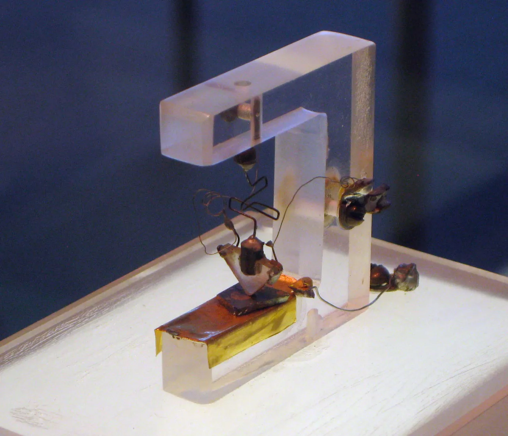
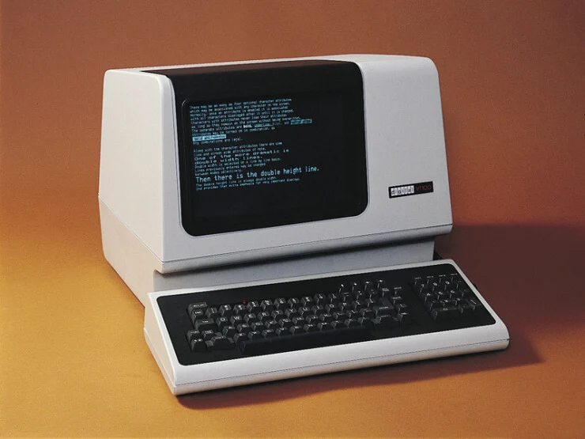
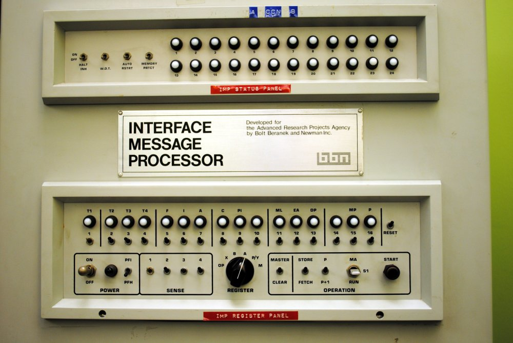
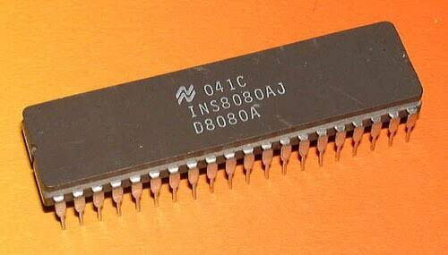
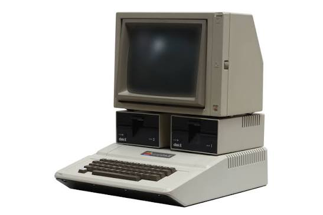

1945 - ENIAC
 The first general purpose computer was a room sized machine called the Electronic Numerical Integrator and Computer (ENIAC). It was designed to calculate the trajectories for projectiles.
The first general purpose computer was a room sized machine called the Electronic Numerical Integrator and Computer (ENIAC). It was designed to calculate the trajectories for projectiles.
1953 - Transistors

When electronic computers were first invented, they used vacuum tubes to create digital logic. These were power hungry, loud, and unreliable. In 1947, AT&T Bell Labs created the first transistor. However, they first found their place in computers in 1958, inside IBM Mainframes.1961 - Time Shares

Large mainframe computers were very difficult to utilize. You had to translate your programs into punch cards and ship them to the office. Instead, one could connect terminals, devices with a screen and a keyboard, to the mainframe over telephone lines. Several people could concurrently use the mainframe at once. The first time-sharing system was the Compatible Time-Sharing System, which came online in 1961.1969 - ARPANET

ARPANET was created by the United States Department of Defense. It was the originator and backbone of the early internet. The network introduced fundamental networking principles, such as communication over the TCP/IP protocol. It came online in 1969 when researchers at Stanford transmitted the characters "LO" over the network before it crashed.1974 - The 8080 Microprocessor

The Intel 8080 was originally designed for embedded systems. However, its ease of use made it popular in a number of other products, including microcomputers. This caused the industry to boom, contributing to the development of the modern computer.1977 - The Apple ][

The Apple ][, created by Steve Wozniak and Steve Jobs, was a breakthrough in the personal computer market of the United States. It came preassembled for the first time, letting users skip the hassle of building kits. The Apple ][ sold around 6 million total units.